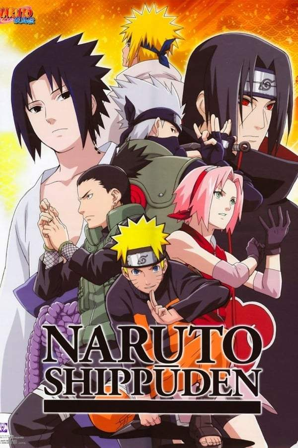

Naruto Shippuden
Data de lançamento: 5 de outubro de 2014 – 21 de dezembro de 2014
Gêneros: Gênero: Comédia romântica

Data de lançamento: 5 de outubro de 2014 – 21 de dezembro de 2014
Gêneros: Gênero: Comédia romântica
Data de lançamento: 1 de abril de 2017 – 17 de junho de 2017
Gêneros: Ação, Fantasia sombria, Ficção pós-apocalíptica